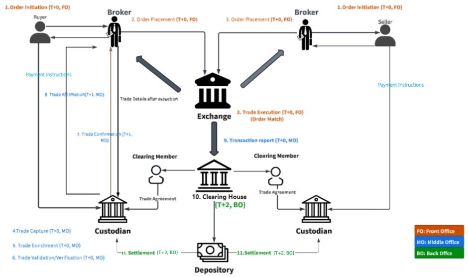
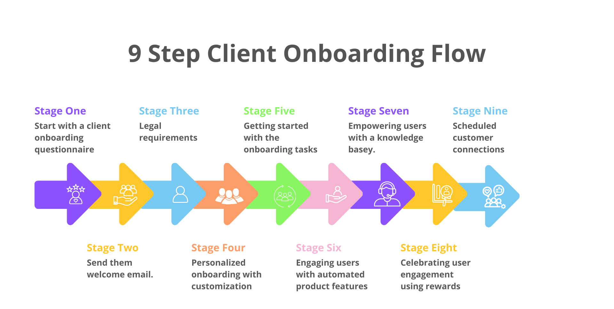

Implementation of Capital Market Backoffice (BO) Application
A Capital Market Backoffice (BO) application is an enterprise system used by financial institutions to manage post-trade operations. It supports the full lifecycle after a trade is executed, ensuring accuracy, compliance, and operational efficiency.
Key Functions
- Requirement & gap analysis: Conducted detailed workshops with business and operations teams to understand trade lifecycle, settlement flows, and reconciliation needs.
- System design & configuration: Designed database structures, workflows, user roles, and financial mappings aligned with backoffice processes.
- Data migration planning: Identified critical datasets, cleaned legacy records, and prepared structured SQL migration scripts with validation checkpoints.
- Integration alignment: Coordinated with upstream trading systems and downstream accounting/reporting modules to ensure seamless end‑to‑end processing.
- Testing & validation: Executed SIT and UAT cycles with business teams, validating trades, settlements, reports, and reconciliation logic.
- User training & documentation: Delivered training sessions for operations teams and created functional/technical documentation.
- Go‑live & stabilization: Managed production rollout, monitored early‑life issues, and ensured stable performance across all modules.
- Requirement & compliance analysis: Collaborated with compliance and business teams to define KYC rules, verification steps, and regulatory workflows.
- Process & system design: Designed onboarding journeys, approval flows, document‑verification logic, and backend data structures.
- Data model & validation setup: Created secure database schemas for customer profiles, documents, audit logs, and verification statuses.
- Integration alignment: Integrated with ID verification APIs, document validation services, and internal customer master systems.
- Testing & quality checks: Conducted SIT, UAT, and negative testing to validate rule checks, document flows, and compliance scenarios.
- User training & documentation: Provided training to operations/compliance teams and prepared onboarding manuals.
- Go‑live & stabilization: Executed production deployment, monitored onboarding flows, and resolved early‑stage issues to ensure smooth adoption.
- © Sandip Waingade
- Contact: +91 9890901145,+49 15511548316
End-to-End Implementation Steps
Implementation of eKYC Application
An eKYC application is a digital onboarding and verification system used by financial institutions to authenticate customer identity and comply with regulatory requirements.
Key Functions
End-to-End Implementation Steps
GST Module Implementation at IDFC
Led the end‑to‑end implementation of the GST module at IDFC when GST was first introduced by the government, ensuring compliant tax processing, seamless system integration, and minimal disruption to business operations.

Implementation Approach
Enterprise Migration:Class to TCS BaNCS
Led the end‑to‑end implementation of the GST module at IDFC when GST was first introduced by the government, ensuring compliant tax processing, seamless system integration, and minimal disruption to business operations.